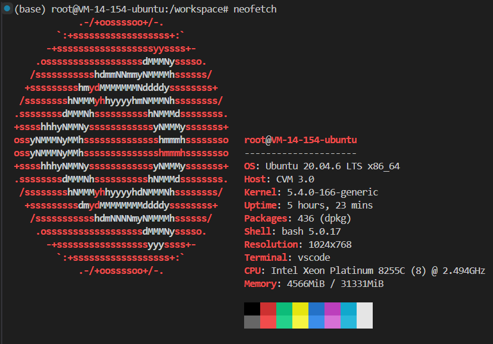
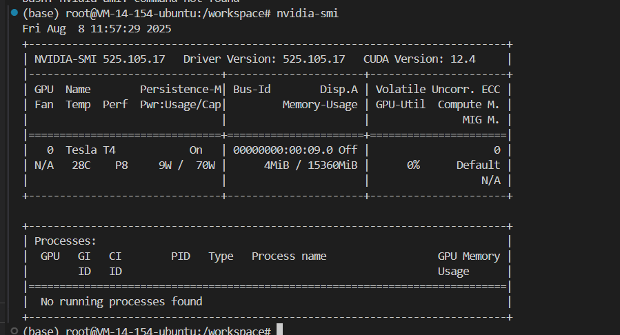

apt install neofetch 是一条在 Debian / Ubuntu / 及其衍生发行版 的 Linux 系统中用来安装软件的命令。
拆开解释：
-
apt- 这是 Ubuntu/Debian 系列系统的包管理工具（Advanced Package Tool）。
- 用来安装、更新、卸载、搜索软件包。
-
installapt的一个子命令，意思是“安装”。- 格式：
apt install <软件名>。
-
neofetch- 一个终端工具，用来在命令行显示系统信息，并配合漂亮的 ASCII 发行版 logo。
- 它会显示操作系统版本、内核、CPU、内存、桌面环境等信息。
- 常用于截图或炫酷的系统展示。
执行时流程：
apt install neofetch
系统会：
- 从软件源里找到
neofetch软件包。 - 下载它和依赖文件。
- 安装到系统中。
安装后运行：
neofetch
就能看到一个彩色的系统信息界面。 
点击展开 / 折叠：系统信息介绍
这张截图是什么（概述）
你贴出的图片是 neofetch 的输出 —— 一个用来在终端快速展示系统信息的工具。左边是发行版的 ASCII logo（这里是 Ubuntu 的标志），右侧按行列出了主机名、操作系统、内核、CPU、内存等关键信息，并在底部显示了终端颜色调色板。
下面我把每一行/每一项逐条拆开，详细解释含义、如何验证来源，以及常用的扩展命令与排查建议。
逐项详解
顶部：root@VM-14-154-ubuntu
-
含义：当前登录用户和主机名。
root表示你以超级用户身份登录；VM-14-154-ubuntu是主机名。 -
如何查：
whoami # 当前用户名 hostname # 主机名
OS: Ubuntu 20.04.6 LTS x86_64
-
含义：操作系统及版本（Ubuntu 20.04.6 LTS），体系结构为 64 位（x86_64）。
-
如何查：
cat /etc/os-release lsb_release -a
Host: CVM 3.0
-
含义：厂商/主机类型，
CVM常见于云厂商（Cloud Virtual Machine）表示这是云主机/虚拟机。具体厂商信息可不同云上显示不同标识。 -
如何查：
sudo dmidecode -s system-product-name # 需 root，可能返回云厂商/型号 hostnamectl
Kernel: 5.4.0-166-generic
-
含义：Linux 内核版本。
-
如何查：
uname -r uname -a
Uptime: 5 hours, 23 mins
-
含义：系统自上次启动以来运行时间（开机时长）。
-
如何查：
uptime
Packages: 436 (dpkg)
-
含义：系统已安装软件包数量（这里用的是 Debian/Ubuntu 的
dpkg包管理器统计）。 -
如何查：
dpkg -l | wc -l # 或 apt: apt list --installed | wc -l
Shell: bash 5.0.17
-
含义：当前使用的 shell 及其版本。
-
如何查：
echo $SHELL bash --version
Resolution: 1024x768
-
含义：当前显示/终端的分辨率（对于远程/VSCode 终端通常是虚拟分辨率）。
-
如何查（图形环境）：
xdpyinfo | grep dimensions # 需要 X 环境
Terminal: vscode
- 含义：neofetch 检测到你是在 VS Code 的集成终端里运行（通常是通过 Remote - SSH 打开的终端）。
CPU: Intel Xeon Platinum 8255C (8) @ 2.494GHz
-
含义：CPU 型号与频率。括号中的数字（
(8)）表示 neofetch 检测到的核心数（可能是逻辑核心或物理核心，依系统而异）。 -
如何查看更详细信息：
lscpu cat /proc/cpuinfo | grep "model name" -m1lscpu会显示CPU(s):（逻辑核数）、Core(s) per socket、Thread(s) per core等字段，帮助你区分物理核与线程。
Memory: 4566MiB / 31331MiB
-
含义：当前使用的内存 / 总内存，以 MiB（Mebibyte）为单位。
-
换算成 GiB（更直观）：按 1 GiB = 1024 MiB 计算：
4566 MiB ≈ 4.46 GiB（计算：4566 ÷ 1024 = 4 + 470/1024 ≈ 4.459）31331 MiB ≈ 30.60 GiB（计算：31331 ÷ 1024 = 30 + 611/1024 ≈ 30.596） 所以约 4.46 GiB / 30.60 GiB（已用 / 总量）。
-
如何查：
free -h cat /proc/meminfo
底部：颜色块（16 色）
- 含义：neofetch 显示当前终端的 16 色调色板（颜色 0–15）。用于检查主题/配色是否正确。
为什么 neofetch 有用
- 快速一览：在终端打开时即可看到系统概况，方便截图或诊断（例如你发图给别人求助时）。
- 可配置：可以自定义显示哪些信息、替换 ASCII logo、在登录时自动运行等。
- 轻量：只读系统信息，不会改变任何设置。
常用扩展命令（排查/获取更多硬件信息）
-
查看显卡（如果有 NVIDIA）：
nvidia-smi lspci | grep -i nvidia -
查看磁盘与分区：
df -h lsblk sudo fdisk -l -
实时监控 CPU / 内存：
top htop # 更友好（需安装: apt install htop） glances # 更全（需安装） -
查看已安装包的详细来源（Debian/Ubuntu）：
dpkg -l | less
常见自定义与小技巧
-
安装 neofetch（Ubuntu/Debian）：
sudo apt update sudo apt install neofetch -
登录时自动显示：在
~/.bashrc或~/.profile最后加一行：neofetch -
配置文件位置：
~/.config/neofetch/config.conf（在此修改要显示/隐藏的字段、logo、格式等）。 -
让 neofetch 显示额外信息：编辑
config.conf中的info列表（例如加入gpu、disk等条目）。
小结 & 建议
- 你的机器是 云主机（CVM），运行 Ubuntu 20.04，CPU 为 Intel Xeon Platinum 8255C，内存约 31.3 GiB（当前使用 ~4.5 GiB），并在 VS Code 的终端 中运行 neofetch。
在终端运行 nvidia-smi 会出现GPU信息界面

点击展开 / 折叠：GPU状态信息
这张图显示的是在终端运行 nvidia-smi 的结果，意思是查看显卡（NVIDIA GPU）的状态信息。
第一行
Fri Aug 8 11:57:29 2025
当前系统时间。
驱动和 CUDA 信息
NVIDIA-SMI 525.105.17 Driver Version: 525.105.17 CUDA Version: 12.4
- NVIDIA-SMI：NVIDIA 的命令行工具版本（这里是 525.105.17）。
- Driver Version：显卡驱动版本（525.105.17）。
- CUDA Version：CUDA 工具包版本（12.4），用于 GPU 加速计算。
GPU 设备信息
GPU Name Persistence-M Bus-Id Disp.A Volatile Uncorr. ECC
Fan Temp Perf Pwr:Usage/Cap Memory-Usage GPU-Util Compute M. MIG M.
对应下面这行数据：
0 Tesla T4 On 00000000:00:09.0 Off 0
N/A 28C P8 9W / 70W 4MiB / 15360MiB 0% Default N/A
解释：
- GPU：编号，这台机器只有一张卡（
0）。 - Name：显卡型号（Tesla T4，一种服务器用 GPU）。
- Persistence-M：
On表示持久化模式开启（节省初始化时间）。 - Bus-Id：PCI 总线 ID（唯一标识 GPU 位置）。
- Disp.A：显示器是否连接（Off 表示没接显示器）。
- ECC：错误纠正码功能，这里是
0（关闭）。
第二行：
- Fan：风扇转速（N/A，因为 T4 是被动散热）。
- Temp：温度（28°C）。
- Perf：性能状态（P8，空闲状态）。
- Pwr:Usage/Cap：功耗（9W / 70W 最大）。
- Memory-Usage：显存使用（4 MiB / 15360 MiB，总共 15 GB）。
- GPU-Util：GPU 利用率（0%，空闲）。
- Compute M.：计算模式（Default，正常模式）。
- MIG M.：多实例 GPU 模式（N/A，未启用）。
进程信息
No running processes found
说明当前没有程序在用这块 GPU。
💡 总结：
- 你这台服务器有一块 Tesla T4 显卡（15 GB 显存）。
- 驱动和 CUDA 都正常安装。
- GPU 当前几乎空闲（0% 利用率，4MiB 显存占用）。
- 没有进程在使用 GPU。